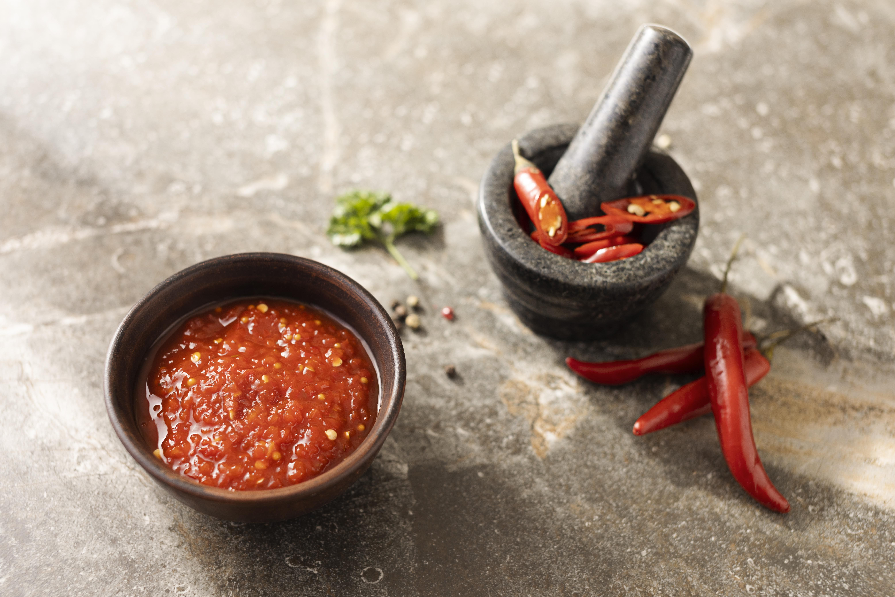

제목: 중국 현지에서 시작되는 정통의 맛

정통 충칭 훠궈의 깊은 맛은 결국 좋은 재료에서 시작합니다. VFB가 말하는 ‘Local Farm’은 행정적 의미의 지역 농가만을 뜻하지 않습니다. 우리의 로컬은, 정통의 뿌리가 있는 충칭과 중국 현지 그 자체입니다.
핵심은 정통 — 중국 현지 조달 원칙
마라 향신료, 두반장, 화자오 등 맛의 뿌리를 이루는 핵심 재료는 충칭·쓰촨 등 현지에서 엄선해 들여옵니다. 수입 과정이 까다롭고 비용이 더 들더라도, 정체성을 지키기 위한 최소한의 원칙입니다.
국내 신선 공급망과의 조화
채소·육류 등 신선 식재는 국내에서 안정적인 공급망을 통해 보완합니다. 이렇게 중국 현지 조달(핵심) + 국내 신선 공급(보완)의 조합으로, 한 그릇 안에서 정통성과 신선함의 균형을 맞춥니다.
“Food & Beyond — 음식을 넘어, 경험으로” VFB는 정직한 원산지 표기와 투명한 조달 과정을 통해, 맛 이상의 가치를 전합니다.
공급 흐름(예시)

대표 재료 한 줄 소개
마라 향신료 — 얼얼한 화자오 향으로 훠궈의 골격을 세웁니다.
두반장 — 깊고 풍부한 감칠맛의 중심.
수제 새우완자 — 탱글한 식감은 신선도와 반죽 비율의 결과입니다.


정직하게, 투명하게
우리는 “로컬”을 맛의 근원으로 정의합니다. 한국 매장에서 만나는 한 그릇의 훠궈가, 중국 현지의 진짜 맛과 국내의 신선함을 동시에 담아낼 수 있도록 원산지와 공정을 투명하게 공개하겠습니다.